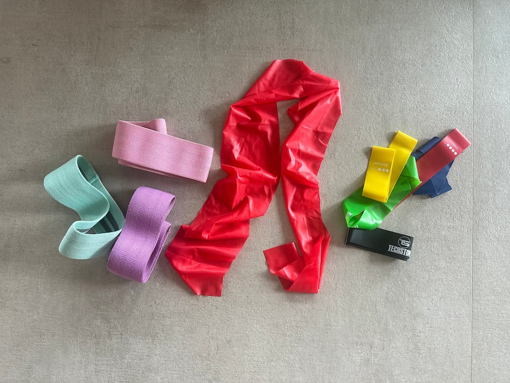
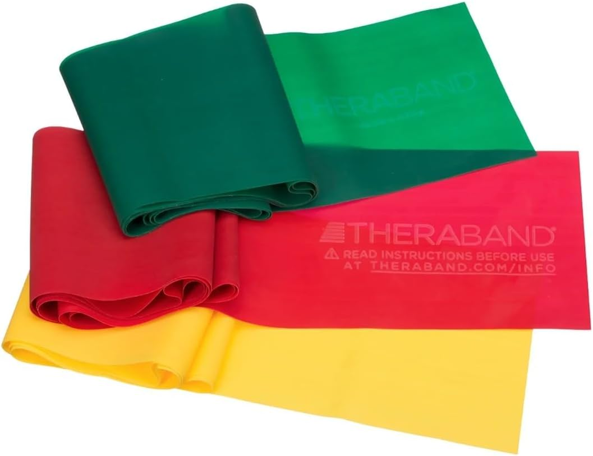
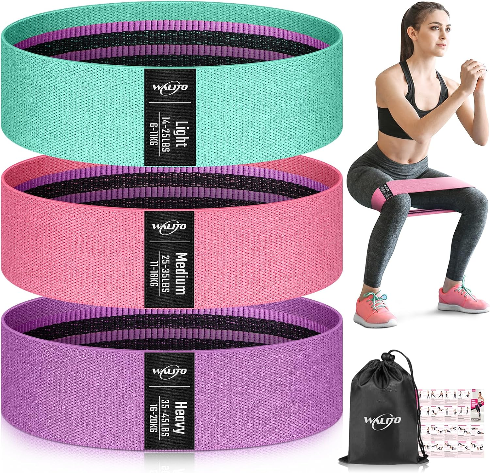

Faixas elásticas: ferramenta pequena, resultado gigante
No mundo da recuperação do joelho, faixas elásticas são melhores amigas. São baratas, portáteis e criam a tensão progressiva que “acorda” músculos que ficam desligados no pós-operatório.

Minha estratégia em duas fases
Eu não comprei uma faixa só. Eu usei dois tipos diferentes dependendo da fase da recuperação.
Fase inicial: comecei com uma faixa longa, larga e plana (tensão média). Ela é perfeita para mobilidade assistida, alongamentos e puxadas bem leves - dá para aumentar o fluxo de sangue sem “brigar” com a articulação.
Fase de força: mais pra frente, eu migrei para mini bands (loops). Colocar acima dos joelhos ou nos tornozelos para monster walks e glute bridge foi um divisor de águas para estabilidade de quadril e ativação de glúteo/quadríceps.
“Não vá no kit mais barato. Procure qualidade e reputação. Uma faixa estourar no meio do exercício é a última coisa que seu joelho operado precisa.”
Faixa longa, larga e plana
Ideal para reabilitação no começo, mobilidade assistida e até treino de membros superiores sentado.
- ✅ Ótima para mobilidade/ADM e exercícios assistidos
- ✅ Resistência progressiva e suave (menos estresse articular)
- ✅ Super fácil de segurar por ser mais larga
- 💡 Dica: escolha tensão média; dá para dobrar e aumentar a carga.

Mini bands / Loops
Faixas circulares compactas para glúteos, quadril e força na cadeia lateral.
- ✅ Essenciais para ativar glúteos e estabilizadores do quadril
- ✅ Ultra-portáteis — cabem em qualquer bolsa
- ❌ Loops de borracha baratos enrolam, beliscam e perdem tensão
- 💡 Recomendação: prefira loops com tecido (mais confortáveis).

Meus “pro-tips” na recuperação
Compre em múltiplos
Faixas são pequenas e somem fácil. Eu comprei mais de um kit e deixei em vários lugares: na bolsa da academia, no carro e na sala. Se você vê a faixa, você tende a fazer aqueles exercícios “escondidos” ao longo do dia.
Qualidade > preço
Olhe avaliações sobre “estourar” ou “enrolar”. Marcas como Theraband ou Blackroll tendem a ter padrões melhores. Vale pagar um pouco mais para evitar que a faixa arrebente durante a série.
Regra “tornozelo vs. joelho”
Colocar o loop nos tornozelos cria mais alavanca e fica mais difícil. Se você sentir o joelho operado “puxando”, suba a faixa para logo acima dos joelhos e reduza a alavanca.
Cheque rasgos
Uma vez por semana, estique suas faixas e procure micro-rachaduras. Se aparecerem, descarte na hora. São itens “consumíveis” - não espere estourar.